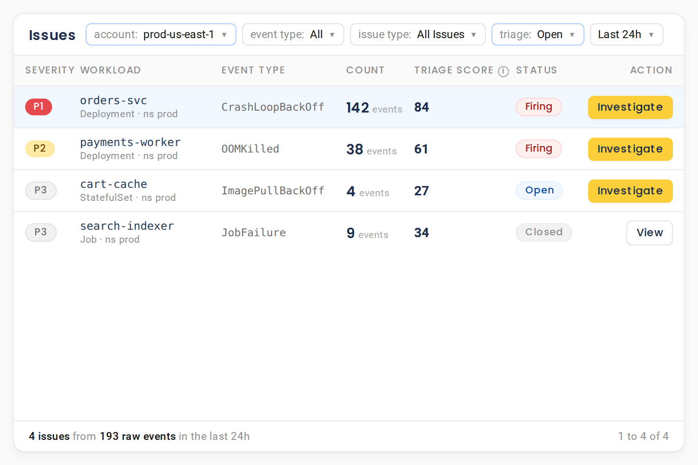
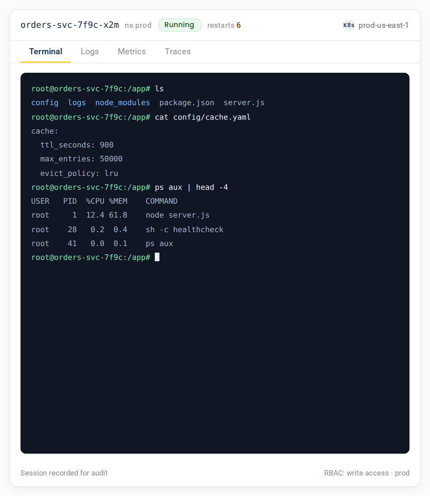
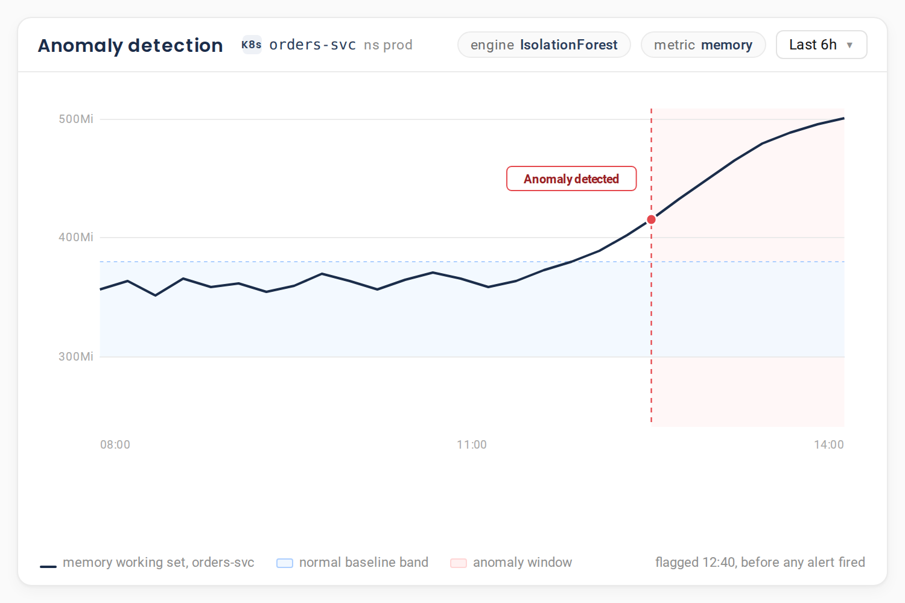
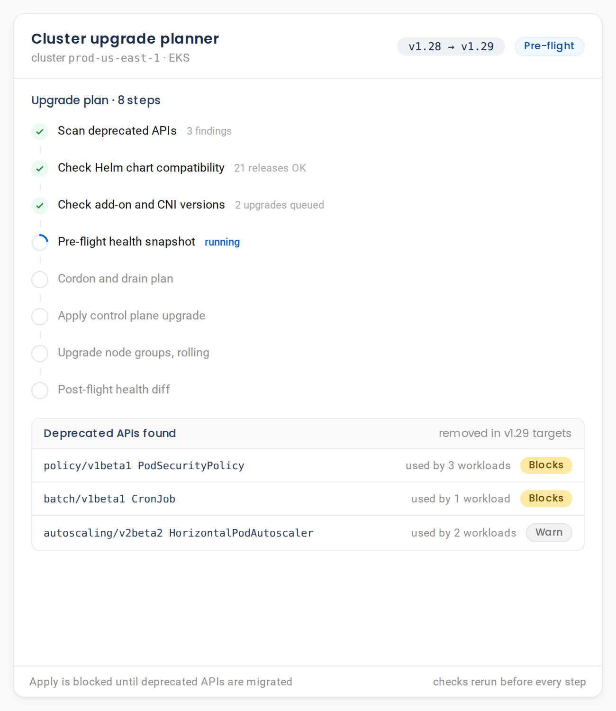
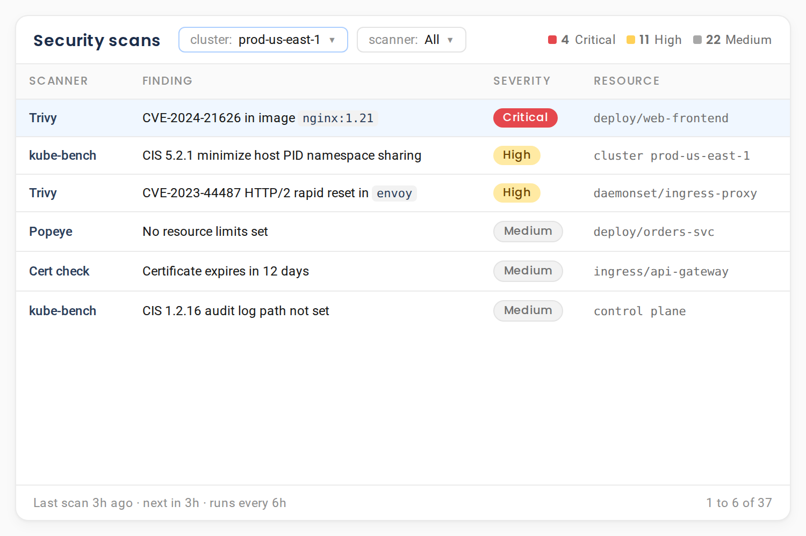
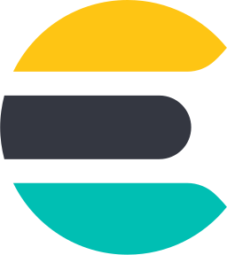

The AI agent that runs Kubernetes day two
Live cluster topology, alert noise collapsed to real issues, and an agent that can exec into a pod, find the fault and propose the fix. Self-hosted, and it changes nothing without your say-so.
Self-hosted in your cluster · Zero telemetry · Reads freely, writes on approval · Free forever tier
What is AIOps for Kubernetes?
AI for Kubernetes operations, or AIOps for Kubernetes, puts an AI agent for Kubernetes day-two work in the loop: live topology, cluster health, alert de-noising, anomaly detection, and Kubernetes troubleshooting to a root cause with auto remediation on approval. Encore AI runs inside your own cluster, reads freely, and gates every change behind human approval.
AIOps Kubernetes operations, from event to fix
One agent covers the whole day-two loop, and every stage of it is readable rather than hidden behind a score.
- Collapse the noise. Crash loops, image-pull backoffs, OOM kills, job failures and restarts group into one issue per owning workload, each with a 0 to 100 triage score.
- Catch what has not paged yet. Three anomaly engines watch CPU, memory, latency, error rate and replica count, with heavy false-positive suppression.
- Investigate it properly. The agent execs into pods, runs
kubectl,helm,argocdand PromQL, and works the fault back to a root cause. - Kubernetes auto remediation, on your say-so. On your approval, Encore AI applies the fix as a live patch or a pull request, and Auto-Pilot can rightsize the routine workloads on a schedule with dry-run and guardrails. It all runs as durable runbook automation.
See the root cause analysis tools that work for Kubernetes incidents.

A cluster map that is always current
Encore AI maps the entire Kubernetes estate live into its own store: workloads, pods, nodes and namespaces, with resource-version-aware updates and reliable removal of things that no longer exist.
Node hardware, capacity and placement are read directly, including spot-versus-on-demand detection across Karpenter, EKS, AKS, GKE and Spotinst.
Dependency mapping runs on the same live store, so a failing workload is traced along its real edges to what it actually depends on, not to whatever happened to alert in the same minute. That map is also the basis for Kubernetes cluster health: what is running, what is degraded, and which node it is sitting on.
One issue per workload, not one alert per pod
Owner-level de-duplication collapses the usual flood into something a human can act on, instead of one alert per pod per restart.
- Crash loops, image-pull backoffs, job failures, CPU throttling and pod-not-ready all group under the workload that owns them.
- OOM detection triggers at 92% container and 95% node memory.
- Around 70 named alert types auto-escalate based on how long they have persisted.
- Every issue gets a 0 to 100 score covering severity, whether it is production, duplicate history, SLO impact, restart count and config changes, mapping to P0 at 80, P1 at 60, P2 at 40.


Exec, logs, metrics and traces, without leaving the page
The agent works the cluster the way you would, from the browser, running only read-only diagnostics.
- An in-browser terminal execs straight into a pod, with a debugger and profiler alongside it.
- Prometheus queries auto-tune their resolution to the time range you are looking at.
- It runs the same read-only diagnostics you would:
kubectl,helm,argocdand PromQL. - Log and trace queries run against your existing backends, in place.
It flags the metric that moved before it pages you
Three swappable engines run across CPU, memory, latency, error rate and replica count, with heavy false-positive suppression so a single quiet weekend does not trigger a page.
- IsolationForest, the default, at 1% contamination with 100 estimators.
- DBSCAN, density-based detection for per-metric outliers.
- Z-score, classic statistical detection at 3 sigma.


Upgrade planning that checks before it moves
An eight-step upgrade planner checks before it moves, and executes only what it declared.
- Cross-references a live registry of deprecated APIs.
- Checks Helm chart compatibility before the upgrade.
- Runs a health diff before and after the change.
- Execution uses an allowlisted set of
kubectland cloud CLI commands, so the plan cannot wander outside what it declared.
Kubernetes security scanning: CIS, CVEs and misconfigurations
Encore AI orchestrates scanners as jobs inside your cluster, and findings land in the same ranked queue as everything else, not a separate console.
- kube-bench (CIS)
- Trivy CIS
- Trivy image CVEs
- Popeye
- Certificate expiry
- Version skew
- Unused volumes

It reads freely. It changes nothing without you.
Two modes, drawn at the tool layer, not left to the model's judgement.
Diagnoses without asking
Read-only diagnostics run without asking, so finding the fault in a cluster is never slowed by a prompt.
Gated behind your approval
Every create, update and delete is classified at the tool layer and gated behind explicit human approval. Before it applies a change, it scores the blast radius from the live dependency graph and auto-applies only what is safe. Everything else waits for your approval.
No self-granted access
The agent is forbidden from modifying RBAC to grant itself access it lacks.
It does the work, not you
It never asks you to go and run commands yourself.
Untrusted by default
All tool output is treated as untrusted input, a deliberate prompt-injection defence.
 Slack
Slack Microsoft Teams
Microsoft Teams Google Chat
Google Chat- Signed link
It works with your observability, it does not replace it
Encore AI queries your existing backends in place, in their own native query languages. Metrics, logs and traces are not shipped out to a third party.
 Prometheus
Prometheus Grafana
Grafana VictoriaMetrics
VictoriaMetrics Datadog
Datadog New Relic
New Relic Loki
Loki
Elasticsearch Jaeger
Jaeger OpenTelemetry
OpenTelemetry PagerDuty
PagerDuty- Jira
 ServiceNow
ServiceNow GitHub
GitHub GitLab
GitLab Argo CD
Argo CD- Slack
- Microsoft Teams
- Google Chat
Queried in place, in native dialects including PromQL, LogQL, KQL, NRQL and Elasticsearch DSL.
Browse all 78 integrationsRuns in your cluster. Nothing leaves.
Self-hosted
Runs inside your own Kubernetes cluster.
Zero telemetry
Nothing phones home.
Outbound only
The in-cluster agent dials out over a single WebSocket. No inbound ports, no exposed Kubernetes API server, no VPN.
Encrypted and signed
Credentials encrypted at rest with AES-256-GCM. Agent messages signed with Ed25519.
Bring your own model
Eleven provider routes including AWS Bedrock, OpenAI, Azure OpenAI, Google AI, Vertex AI, SageMaker, HuggingFace, Anthropic, Ollama and vLLM. Embeddings can run on-device.
Readable source
Read the implementation, with a free Community edition.
Nothing leaks to the model
Outbound AI requests are scanned for secrets before they reach any model, and can be redacted or blocked.
Frequently asked questions
For the engineer who lives in kubectl and distrusts magic.
Book a DemoKubernetes Operations is one of four assistants on the same platform
One platform, one knowledge graph. Add another assistant with no new install and no re-integration.

Point it at your own cluster.
Free forever. Self-host at any scale, or run 2 clusters or cloud accounts free on Cloud SaaS. Nothing leaves your environment. No credit card.